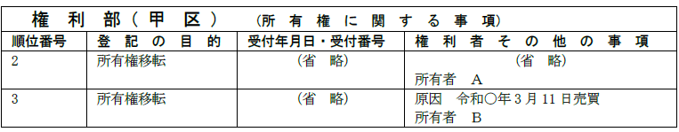

第１編 各 論
第10章 判決等による登記
第１節 判決による登記
1. 判決による登記
権利に関する登記の申請は、原則として、登記権利者及び登記義務者が共同してしなければならないが（60条）、登記義務者が登記の申請に協力しない場合、登記権利者は、登記手続をすべきことを命ずる確定判決により、登記義務者の登記申請意思を擬制してもらい、単独で申請することができる(63条1項)。
この判決による登記がなされるのは、登記義務者が登記申請に非協力的な場合が一般的であるが、登記権利者が非協力的である場合も判決による登記が可能である。
ex.ＢがＡ所有の土地を買い受けたが、登記権利者であるＢが所有権移転登記手続に協力しない場合、登記義務者であるＡは、Ｂを被告として所有権移転登記手続を命ずる判決を得て、単独でＡからＢへの所有権移転登記を申請することができる。
（登記権利者が登記に協力しない理由）
①税金（固定資産税等）を払いたくない、②差押えを恐れている等
2. 「判決」に該当するもの
確定判決だけでなく、確定判決と同様の効力があると認められるものであれば、それに基づいて、登記をすることができる。
(1) 判決に準ずるもの
①裁判上の和解調書（明35.7.1民刑637等）
②認諾調書
③調停調書（昭29.1.6民甲2560）
④確定した執行決定のある仲裁判断（昭29.5.8民甲938）
⑤家事審判における審判書・調停調書
⑥確定した執行判決のある外国裁判所の判決
(2) 判決に準じないもの
①転付命令（昭6.10.21民1028）
転付命令の場合、債権者の申請ではなく、裁判所の嘱託によって登記がなされる。
②公証人作成の公正証書（明35.7.1民刑637）
③仮処分決定
④仮執行宣言付判決
3. 判決等の内容
判決等の内容は、登記手続をすべきことを内容としていなければならない。
| 登記手続をすべきことを命ずる給付判決 | ○ |
| 確認判決 ※ | × |
| 形成判決 ※ | × |
※「登記申請意思」を擬制したとはいえないからである。
【給付判決の例】
「Ａは、Ｂに対して、別紙物件目録記載の土地について、◯年◯月◯日売買を原因とする所有権移転登記手続をせよ。」
【確認判決の例】
「別紙物件目録記載の土地について、Ａが所有権を有することを確認する。」
【形成判決の例】
「ＡとＢとを離婚する。」
①所有権移転登記手続に必要な書類を交付する旨が記載されているのみの和解調書は、不動産登記法63条1項にいう「判決」に該当するか？
→ 該当しない（昭56.9.8民3.5483）。
②「被告は原告より金1000円を受領し当該不動産を原告に売り戻すべし」との判決が確定し、原告において金1000円を供託した場合において、当該判決により登記権利者のみで所有権移転の登記を申請することができるか？
→ できない（明33.9.24民刑1390）。この判決は、判決主文で相手方に登記申請をなすべき旨を命じたものではないため、不動産登記法63条1項にいう「判決」とはいえないからである。
③「被告は、原告又は原告の指定する者に対し、別紙不動産につき昭和26年7月1日代物弁済による所有権移転登記手続をする」旨の和解調書により原告又はその指定を受けた者から単独で当該登記の申請をすることができるか？
→ できない（昭33.2.13民甲206）。このような和解条項では、債務者の給付義務の内容が個別的かつ具体的に表示されていないため、意思表示を擬制する余地がないからである。
④遺贈により不動産を取得した旨の和解調書に基づき、登記権利者が単独で遺贈を原因とする所有権移転の登記を申請することができるか？
→ できない。遺贈により不動産を取得したことを確認しただけで、登記手続をすべきことを命じていないので、当該登記を申請することはできない。
⑤家庭裁判所での離婚訴訟における判決中に、不動産の財産分与を命じる主文も併せてあるような場合であっても、登記手続を命ずるものでなければ、判決の確定により登記の真正を担保することができないことから、判決による登記における｢判決｣とはならない。
4. 判決の種類
判決は、確定判決でなければならない（63条1項）。
【申請例139 所有権移転 判決による登記】
事例： 令和○年3月11日、ＡとＢは、Ａ所有の土地をＢに売却する契約を締結し、甲土地が引き渡されたが、移転登記にＡが協力しなかったため、Ｂは、Ａに対して所有権移転登記の給付を求める訴えを提起した。Ｂは、令和○年3月11日売買を原因とする所有権移転登記手続をＡに命ずる勝訴判決を得、令和○年6月28日に確定した。土地の課税標準の額は、金1000万円である。

1. 申請構造
判決による登記義務者（又は登記権利者）の登記申請意思の擬制により、共同申請の構造は維持されるが、実質的には単独申請である。
※なお、単独で登記手続をできる適法な判決等を得た場合であっても、共同申請によることは可能である。元々は共同申請によるべきであるため、相手方が協力するなら、何の問題もない。
2. 添付情報
①登記原因証明情報
判決書正本及び確定証明書を添付する（不登令7条1項5号ロ（1））。
②住所証明情報
判決による登記においても必要である（不登令別表30添付情報ロ、昭37.7.28民甲2116）。なお、登記権利者が被告である場合でも、住所証明情報の提供を要する。
③承諾証明情報（不登令7条1項6号、不登令別表25添付情報ロ、不登令別表26添付情報ヘ）
【判決書により登記原因につき第三者の許可、同意又は承諾が示されている場合】
登記官に明らかであるため、別途第三者の許可、同意又は承諾を証する情報を添付することを要しない（昭22.10.13民甲840）。
【判決書により登記原因につき第三者の許可、同意又は承諾が示されていない場合】
原則どおり添付する。
※判決により登記申請意思が擬制されるので、以下の添付を要しない。
| 登記識別情報 | × |
| 印鑑証明書 | × |
3. 登記原因及びその日付
(1) 判決の主文、事実又は理由中に権利の変動原因及びその日付が明記されているとき
当該原因及びその日付を登記原因及びその日付として申請する。
(2) 登記原因及び日付が明記されていないとき
登記原因は「判決」、日付は「当該判決の確定日」とする（登研451P.125参照）。
(3) 判決書において、登記原因は明らかとされているが、原因日付が明らかでないとき
「年月日不詳売買」等と記載する（昭34.12.18民甲2842）。
1. 登記の種類
判決による登記の対象は、所有権移転登記に限られない。
(1) 「ＢはＡのためにＢ名義の所有権保存登記を抹消せよ。」との判決により、Ａは、単独で所有権保存登記の抹消を申請することができる（昭28.10.14民甲1869）。
(2) 担保権の順位変更など、合同申請による場合にも、判決による登記は可能である(63条1項)。
ex. 乙区に1番抵当権者Ａ、2番抵当権者Ｂ、3番抵当権者Ｃの登記がある場合において、「第1 3番抵当権、第2 2番抵当権、第3 1番抵当権」とする順位変更に関する合意が成立したにもかかわらず、Ｂが登記手続に協力しないときは、Ｃは、Ｂのみを被告として順位変更登記手続を命ずる判決を得て、Ａとともに順位変更登記を申請することができる。
(3) Ａ所有の不動産が無権利者Ｃ名義となっている場合において、Ａから生前に当該不動産の贈与を受けたＢが、Ａの死後、当該不動産について、Ａへの真正な登記名義の回復を登記原因とする所有権の移転の登記手続をＣに対して命じる確定判決を得たときは、Ｂは、単独でその登記の申請をすることができるか？
→ できる（平13.3.30民2.874、昭57.3.11民3.1952）。真正な登記名義の回復を登記原因とする所有権の移転の登記は、死者を名義とするものでも認められる。権利変動の過程は、忠実に公示すべきだからである。
2. 相続人を被告とする場合
(1) 売主の相続人に対する売主から買主への所有権移転登記を命ずる確定判決を提供して、単独で登記申請する場合においても、登記義務者の相続を証する情報の提供を必要とする（登研382P.80）。
(2) 被相続人より不動産を買い受けた者は、共同相続人の1人に対して、登記手続を命ずる確定判決に基づき、単独で所有権移転の登記を申請することができるか？
→ できない（昭33.5.29民甲1086）。
売主が、所有する土地を売却後、死亡した場合における所有権移転登記は、売主の相続人全員を登記義務者として申請することとなるから、共同相続人全員に対して登記手続を命ずる確定判決を得る必要があるからである。
なお、買主が売主の相続人全員に対して訴訟を提起した場合において、判決の理由中の記載等から相続人全員が被告となっていることが明らかなときは、判決書正本又は謄本をもって、当該相続証明情報とすることができるが、そうでない場合には、相続人全員が関与していることを明らかにするために相続を証する情報の提供が必要となる。
3. 判決による中間省略登記
(1) 中間省略登記を命じる判決主文に登記原因の明示がある場合
この場合には、中間登記を省略して、所有権移転登記をすることができる。
ex1. ＡからＢ、ＢからＣへといずれも売買による所有権移転があった場 合において、Ａから直接Ｃへの所有権移転登記を命じる判決があったときには、それにより直接ＡからＣへの所有権移転の登記の申請をすることができる（昭35.7.12民甲1581）。
ex2. 所有権移転登記前に買主が死亡し、その相続人から売主に対して、登記手続の履行を請求した場合において、相続人の請求を認容する判決主文中に、売主から直接買主の相続人名義に登記すべき旨が記載されているときは、当該判決書正本により、相続人は、単独で所有権移転登記を申請することができる（昭35.2.3民甲292）。
(2) 中間省略登記を命じる判決主文に登記原因の明示がなく、その理由中に記載された登記原因の日付が最終の登記原因及びその日付である場合
中間及び最終の登記原因に相続又は遺贈若しくは死因贈与が含まれないときに、中間登記を省略して所有権移転登記を申請することができる（昭39.8.27民甲2885）。
相続等については、当事者間の合意で変更可能な法律関係ではないためと解されるからである。
4. その他
(1) ＡがＢから一筆の土地の一部を買い受けたが、Ｂが分筆登記手続及び所有権移転登記手続に協力しない場合、Ａは、単独で所有権移転登記を申請するためには、Ｂを被告として所有権移転登記手続を命ずる判決のみならず、分筆登記手続を命ずる判決を得なければならないか？
→ 所有権移転登記手続を命ずる判決のみで足りる。
この場合、Ａは、Ｂを被告として所有権移転登記手続を命ずる判決を得れば、自己の所有権移転登記請求権を保全するため、債権者代位権（民法423条）に基づき、Ｂに代位して分筆登記を申請できるからである。
(2) 和解調書に更正決定がなされた場合、更正決定に対して即時抗告をすることが可能であるため（民訴法257条2項本文）、更正決定が確定的に生じていることを確認するために、登記原因証明情報として、当該更正の決定が確定したことを証する書面の提供を要する。
1. 所在等不明共有者の持分の取得（民法262条の2）
(1) 意義
不動産が数人の共有に属する場合において、共有者が他の共有者を知ることができず、又はその所在を知ることができないときは、裁判所は、共有者の請求により、その共有者に、当該他の共有者（以下「所在等不明共有者」という。）の持分を取得させる旨の裁判をすることができる（民法262条の2第1項前段）。
(2) 登記手続
上記の裁判があり、当該裁判に基づいて持分移転登記の申請がされた場合には、当該持分を取得した共有者は、当該所在等不明共有者の代理人になると解され、確定裁判に係る裁判書の謄本が代理権限証明情報及び登記原因証明情報となる。
この場合の登記原因は「年月日民法第262条の2の裁判」（日付は裁判確定日）となる（令5.3.28民二.533）。
不明者の関与なく持分を取得する制度の為、登記識別情報は不要である。
2. 所在等不明共有者の持分の譲渡権限付与制度
(1) 意義
不動産が数人の共有に属する場合において、共有者が他の共有者を知ることができず、又はその所在を知ることができないときは、裁判所は、共有者の請求により、その共有者に、当該他の共有者（以下「所在等不明共有者」という。）以外の共有者の全員が特定の者に対してその有する持分の全部を譲渡することを停止条件として所在等不明共有者の持分を当該特定の者に譲渡する権限を付与する旨の裁判をすることができる（民法262条の3第1項）。
また、所在等不明共有者の持分譲渡権限付与決定は，請求をした共有者が裁判の効力が生じた後2か月以内（裁判所による期間の伸長可。非訟法88条3項）にその権限を行使しない場合には，その効力を失う（非訟事件手続法88条3項本文）。
(2) 登記手続
上記の裁判があり、当該裁判に基づいて所在等不明共有者の持分全部移転登記の申請がされた場合には、請求を行った共有者は、所在等不明共有者の代理人になると解され、確定裁判に係る裁判書の謄本が代理権限証明情報となる。
また、所在等不明共有者の持分移転登記の登記原因日付は、当該裁判が効力を有する期間内でなければならないため、登記原因日付が当該裁判の確定後２か月以内（裁判所による期間の伸長があったことを証する情報が提供された場合には、当該伸長された期間内）でなければならず、期間内でない登記原因日付による登記申請は却下される（不登法25条13号、不登令20条8号）。
※所在等不明共有者の持分移転登記の申請を上記期間内にする必要はない
1. 意思表示の擬制
(1) 原則
登記手続を命ずる判決が確定し、又は和解等が成立すると、判決確定時、又は和解等の成立時に意思表示があったものとみなされる（民執法174条1項本文）。
意思表示を命ずる請求は、代替性がなく、また、間接強制の方法によることは迂遠であるため、端的に判決の確定などをもって意思表示が擬制されるとしたものである。
意思表示の擬制においては、確定判決によって意思表示があったものとされるため、わざわざ執行するということが不要とされているので、判決書正本や和解調書正本等には、原則として執行文の付与を要しない（民執法174条1項本文）。
(2) 例外
しかし、例外的に、下記の(a)から(c)までの場合には、執行文の付与がされた時に、意思表示をしたものとみなされる（民執法174条1項ただし書）。これは、債権者が法の擬制により直ちに確実に債務者の意思表示の効果を得ることとの関係上、債務者の利益を確保する必要に基づくものである。
(a) 債務者の意思表示が債権者の証明すべき事実の到来に係るとき
ex.農地法の許可を得ることを条件としてＡからＢへの所有権移転登記手続を命じている場合
(b) 債務者の意思表示が反対給付との引換えに係るとき
ex.ＢがＡに5000万円支払うのと引換えにＡはＢに対して所有権移転登記手続をせよと判決がなされた場合
(c) 債務者の意思表示が債務者の証明すべき事実のないことに係るとき
ex.ＡがＢに対して1000万円支払わないときは、ＡはＢに対して所有権移転登記手続をせよと判決がなされた場合
①判決確定後に農地でなくなり宅地へ地目変更登記がなされている場合でも、執行文の付与を受けずに当該判決に基づく所有権移転の登記を申請することはできない（登研562P.133）。
②「農地法所定の許可書」は、執行文の付与を受けるために提出しなければならず（民執法27条1項、昭40.6.19民甲1120）、登記の申請の際に併せて提供する必要はない。
2. 当事者に承継が生じた場合
勝訴判決を得たが、その登記をする前に登記義務者又は登記権利者に特定承継又は包括承継が生じた場合、判決に表示された原告又は被告と執行の当事者が異なることになり、問題が生じる。このとき、再度、特定承継人又は包括承継人に対して判決を得なければならないとすると労力が膨大となるため、承継執行文によって、これを軽減する制度が設けられている。
(1) 移転登記
(a) 事実審の最終口頭弁論の終結前に、登記義務者に承継が生じた場合
ＡからＢへの所有権移転の登記手続を命ずる判決が確定したが、その口頭弁論終結前に相続を原因とするＡからＣへの所有権移転の登記がされている場合、承継執行文の付与を受けて判決によるＣからＢへの所有権の移転の登記を申請することができるか？
→ できない（昭31.12.14民甲2831）。Ｃは、口頭弁論終結後の承継人に当たらないので、訴訟承継の問題となるため承継執行文の付与は問題とならない。これは、ＡＣ間が包括承継である場合に限らず、特定承継である場合も同様である。
(b) 事実審の最終口頭弁論の終結後に、登記義務者に包括承継が生じた場合
①Ａ所有の不動産についてＢへの所有権移転の登記手続を命ずる判決が確定した後、その判決に基づく登記の申請をする前に、Ａが死亡し、ＡからＣへの相続による所有権移転の登記がされている場合、Ｂは、この判決にＣに対する承継執行文の付与を受けて、ＣからＢへの所有権移転の登記を申請することができるか？
→ できる。本来、承継人への移転の登記を抹消しなければならないが、便宜このような手続が認められている。
なお、ＡからＣへ合併を原因とする所有権移転の登記がされた場合も、同様の結論となる。
②事実審の最終口頭弁論の終結後に、登記義務者に包括承継が生じたときであっても、包括承継を登記原因とする移転の登記（相続を原因とする所有権移転の登記など）がなされていない場合には、承継執行文の付与されていない確定判決による登記の申請も受理されるか？
→ 受理される。形式的審査権のみ有する登記官にとって、判決に表示された登記義務者の表示と登記記録が一致しないということはないからである。
(c) 事実審の最終口頭弁論の終結後に登記義務者に特定承継が生じた場合
事実審の最終口頭弁論の終結後に登記義務者に特定承継が生じた場合には、原告である買主と、最終口頭弁論の終結後の譲受人のどちらが優先するか？
→ 二重譲渡がなされたことになるため、先に登記を得た者が優先する（最判昭41.6.2）。従って、特定承継の承継人が先に移転の登記をしていた場合は、原告である買主は特定承継人に対する承継執行文の付与を受けて単独で移転の登記を申請することはできない。
(d) 事実審の最終口頭弁論の終結後に、登記権利者に特定承継・包括承継が生じた場合
Ａ名義の不動産につき、Ｂへの所有権の移転の登記手続をＡに対して命じる確定判決がなされた後、Ｂへの所有権の移転の登記がされる前にＢがＣに当該不動産を贈与した場合、又は、ＣがＢを相続した場合、Ｃは承継執行文の付与を受ければ、直接ＡからＣへの所有権の移転の登記を申請することができるか？
→ できない（昭44.5.1民甲895）。登記権利者からその地位を承継した者は、承継執行文の付与を受けても、直接自らを権利者とする移転の登記を申請することはできない。これは、中間省略登記を認めることになってしまうからである。
この場合、承継人は、特定承継であれば被承継人に代位して被承継人への移転の登記を、包括承継であれば相続人からの登記手続（62条）により被承継人名義への移転の登記を単独で申請することができる。
なお、この場合、ＡからＢへの所有権移転登記の申請において、承継執行文の提供は不要である。原告であるＢに登記を移すため、判決に表示された当事者と登記権利者に不一致はないからである。
(2) 抹消登記
事実審の最終口頭弁論の終結後に、登記義務者に特定承継が生じ、既に所有権移転の登記がされている場合において、登記権利者は、承継執行文の付与を受け、単独で所有権抹消登記を申請することができるか？
→ 抹消登記の原因が、その登記の無効を第三者に対抗できるものである場合には、登記権利者は、承継執行文の付与を受け、単独で所有権抹消登記を申請することができる。
cf. Ｂは、Ａの名義を借用して所有権保存登記をしていた所有建物につき、Ａに対して当該保存登記の抹消登記手続を命ずる確定判決を得た後、Ｃが、Ａから当該建物を買い受け、売買を原因とする所有権移転登記をした場合、Ｂは、Ｃに対する承継執行文の付与を受け、ＡＣ間の所有権移転登記を抹消することはできない。そもそも当該所有権保存登記は、ＢがＡの名義を借用して登記がなされているため、Ｂは、Ａが無権利者であることを、善意のＣに対して対抗することができない（民法94条2項類推適用）からである（最判昭41.3.18）。